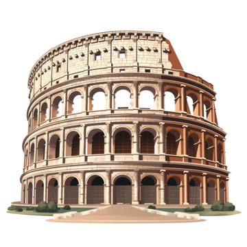
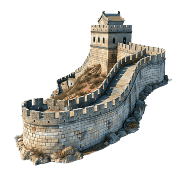
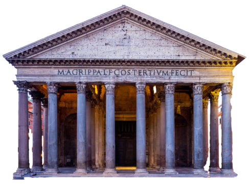
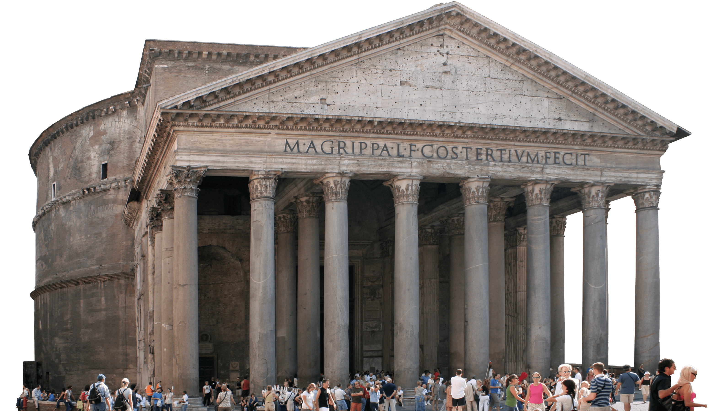
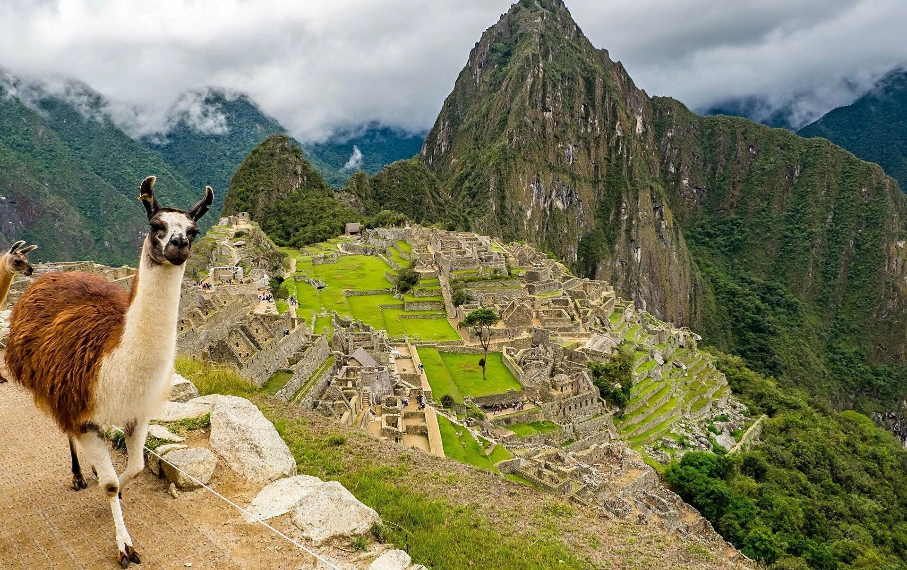
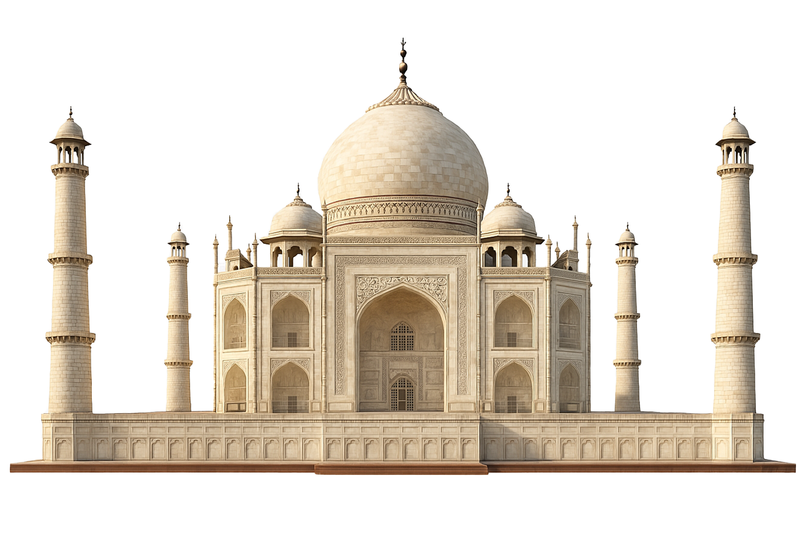

De piramides van Gizeh behoren tot de oudste en bekendste bouwwerken ter wereld en werden gebouwd als graven voor farao’s.


Het Colosseum in Rome was een groot amfitheater waar gladiatoren vochten voor het publiek.


De Chinese Muur is één van de langste bouwwerken ooit en diende om het rijk te beschermen tegen vijanden.


De Parthenon-tempel in Griekenland werd gebouwd ter ere van de godin Athena en is een symbool van de oudheid.


Machu Picchu is een oude Inca-stad hoog in de bergen en blijft één van de grootste mysteries ter wereld.

De Taj Mahal in India is een prachtig wit marmeren gebouw dat werd gebouwd als teken van liefde.
